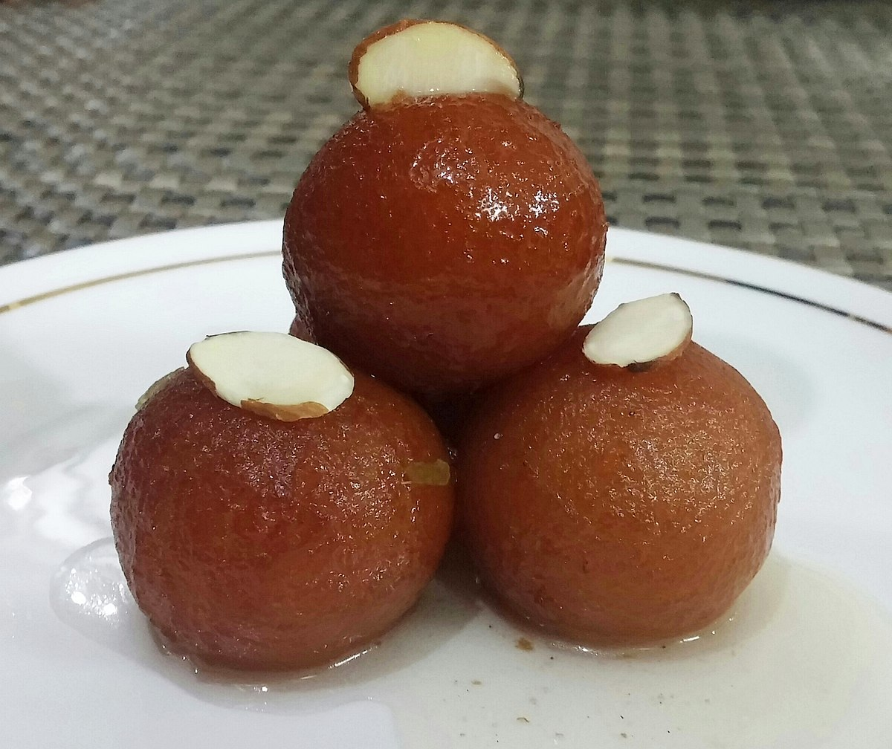

Golab Jamun Recipe
Ingredients:
- 1 cup dry milk powder
- 3 tablespoons all-purpose flour
- 2 tablespoons ghee (clarified butter), melted
- 1/2 teaspoon baking powder
- 1/2 cup warm milk
- 1 tablespoon chopped almonds (optional)
- 1 tablespoon chopped pistachio nuts (optional)
- 1 tablespoon golden raisins (optional)
- 1 pinch ground cardamom
- 1 quart vegetable oil for deep frying
- 1 1/4 cups white sugar
- 7 fluid ounces water
- 1 teaspoon rose water
- 1 pinch ground cardamom
Directions
In a large bowl, stir together the milk powder, flour, baking powder, and cardamom. Stir in the almonds,
pistachios and golden raisins. Mix in the melted ghee, then pour in the milk, and continue to mix until well
blended. Cover and let rest for 20 minutes.